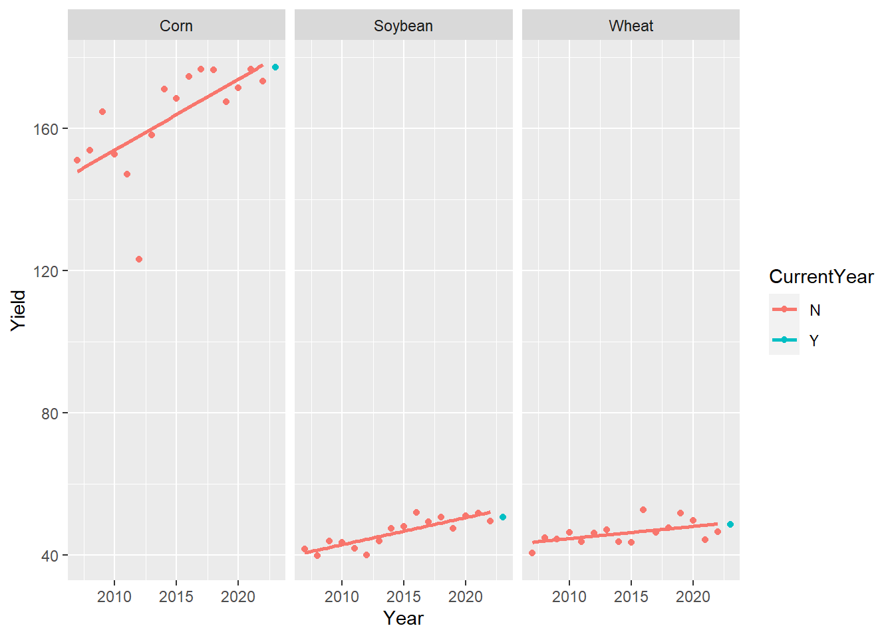
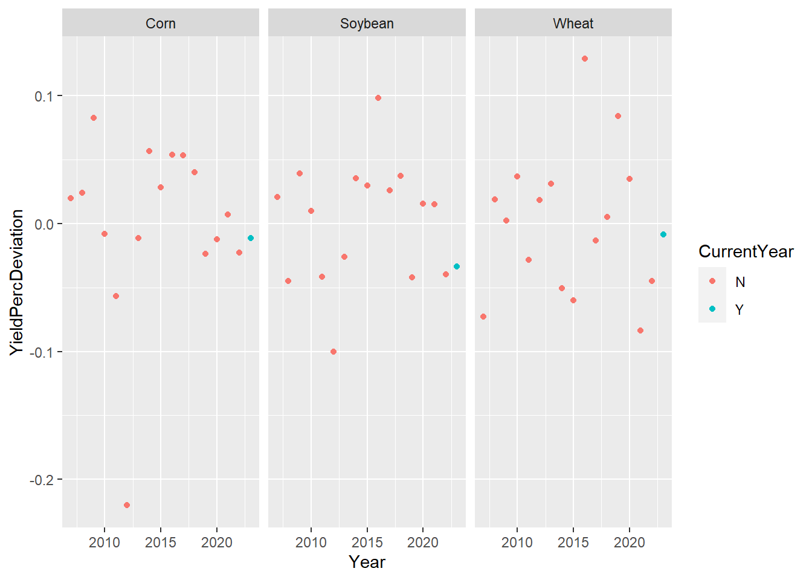
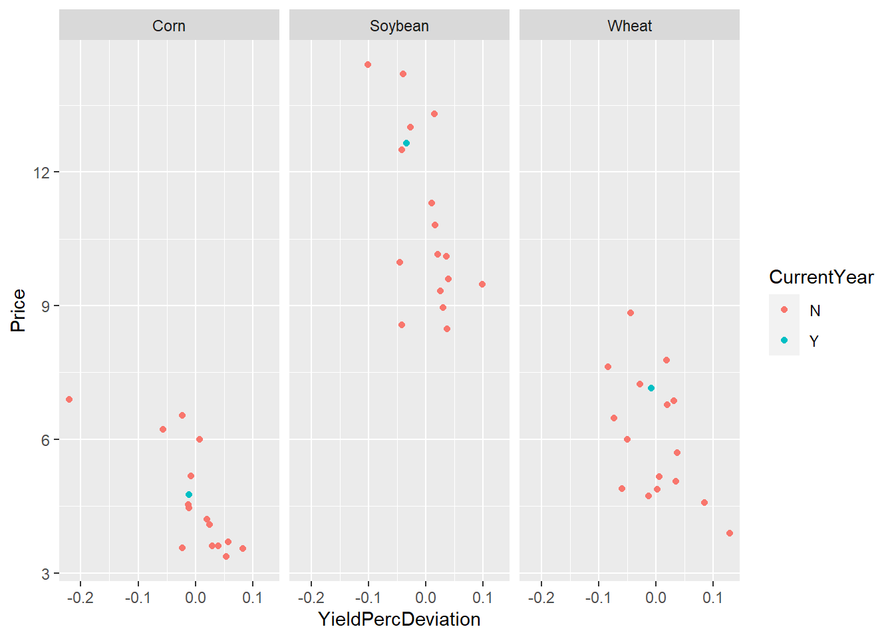
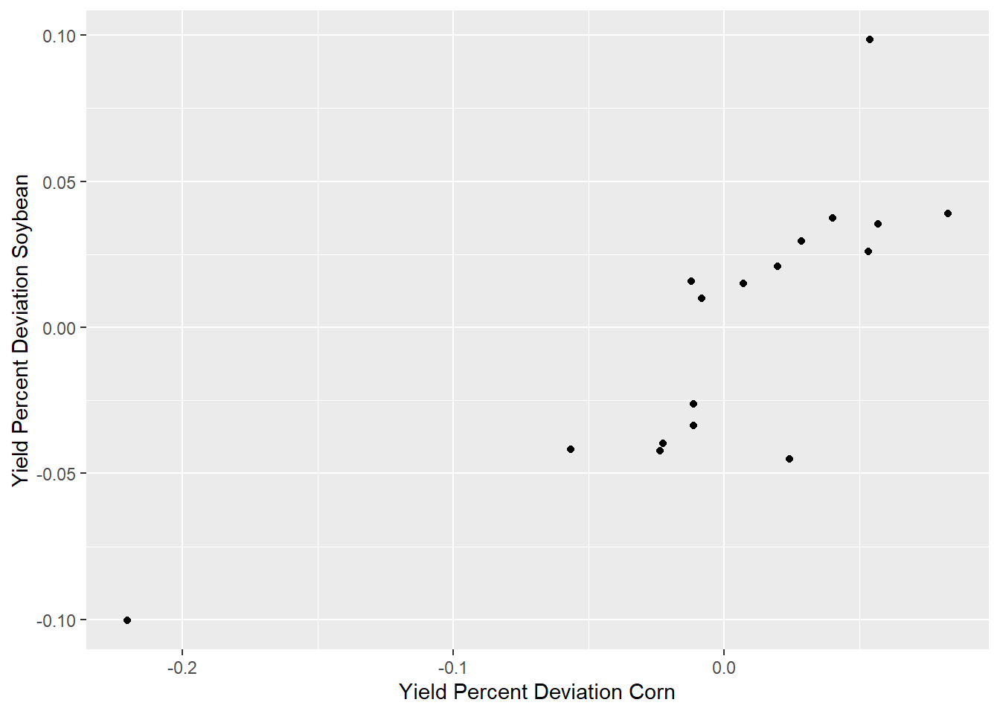
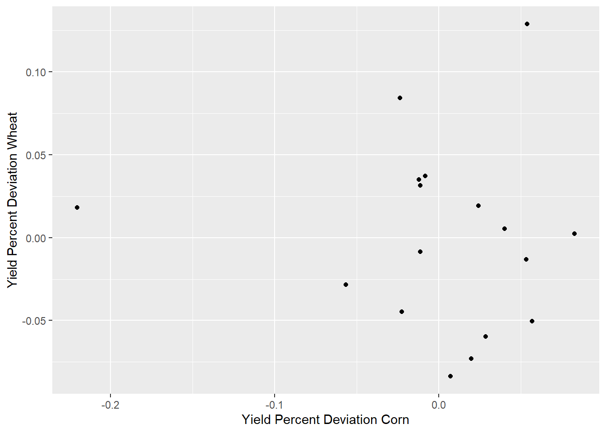
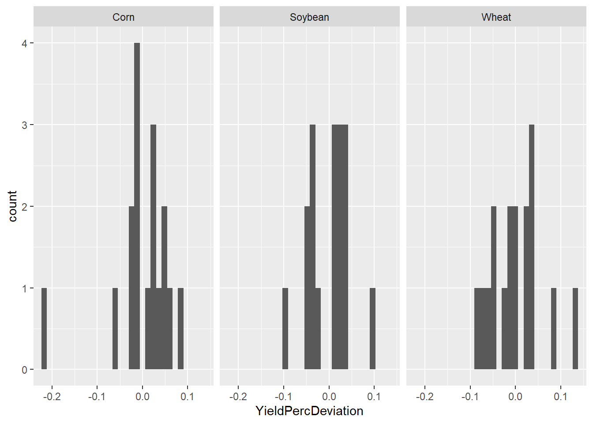
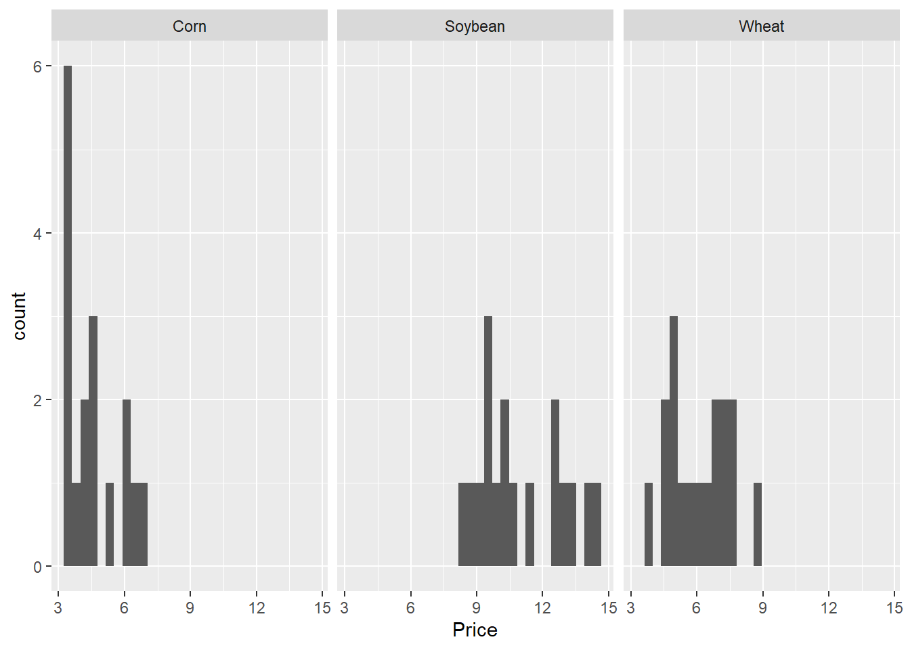

── Attaching core tidyverse packages ──────────────────────── tidyverse 2.0.0 ──
✔ dplyr 1.1.4 ✔ readr 2.1.4
✔ forcats 1.0.0 ✔ stringr 1.5.0
✔ ggplot2 3.4.4 ✔ tibble 3.2.1
✔ lubridate 1.9.2 ✔ tidyr 1.3.0
✔ purrr 1.0.2
── Conflicts ────────────────────────────────────────── tidyverse_conflicts() ──
✖ dplyr::filter() masks stats::filter()
✖ dplyr::lag() masks stats::lag()
ℹ Use the conflicted package (<http://conflicted.r-lib.org/>) to force all conflicts to become errors
library(broom)library(plotly)
Attaching package: 'plotly'
The following object is masked from 'package:ggplot2':
last_plot
The following object is masked from 'package:stats':
filter
The following object is masked from 'package:graphics':
layout
data <-read.csv("PriceYieldDraw.csv") %>%select(c(1:6))data
Year CurrentYear Commodity Yield StockUse Price
1 2007 N Corn 151.14451 0.13254149 4.20
2 2008 N Corn 153.78354 0.13876908 4.08
3 2009 N Corn 164.67925 0.13072095 3.55
4 2010 N Corn 152.80000 0.08640368 5.18
5 2011 N Corn 147.17000 0.07894317 6.22
6 2012 N Corn 123.11000 0.07406746 6.89
7 2013 N Corn 158.10000 0.09156359 4.46
8 2014 N Corn 171.02000 0.12590922 3.70
9 2015 N Corn 168.44900 0.12712236 3.61
10 2016 N Corn 174.64000 0.15654813 3.36
11 2017 N Corn 176.60000 0.14461414 3.36
12 2018 N Corn 176.40000 0.15544513 3.61
13 2019 N Corn 167.50000 0.13743465 3.56
14 2020 N Corn 171.40000 0.08332771 4.53
15 2021 N Corn 176.70000 0.09207007 6.00
16 2022 N Corn 173.40000 0.09877260 6.54
17 2023 Y Corn 177.30000 0.15025943 4.75
18 2007 N Soybean 41.73000 0.06708115 10.15
19 2008 N Soybean 39.71888 0.04529045 9.97
20 2009 N Soybean 43.96000 0.04479143 9.59
21 2010 N Soybean 43.45953 0.06542970 11.30
22 2011 N Soybean 41.92000 0.05357364 12.50
23 2012 N Soybean 40.00000 0.04532305 14.40
24 2013 N Soybean 44.00000 0.02634090 13.00
25 2014 N Soybean 47.53000 0.04948042 10.10
26 2015 N Soybean 48.00000 0.04994929 8.95
27 2016 N Soybean 52.00000 0.07166588 9.47
28 2017 N Soybean 49.30000 0.10193158 9.33
29 2018 N Soybean 50.60000 0.22890959 8.48
30 2019 N Soybean 47.40000 0.13284413 8.57
31 2020 N Soybean 51.00000 0.05706039 10.80
32 2021 N Soybean 51.70000 0.06137993 13.30
33 2022 N Soybean 49.60000 0.06138107 14.20
34 2023 Y Soybean 50.60000 0.07601351 12.65
35 2007 N Wheat 40.50000 0.13133047 6.48
36 2008 N Wheat 44.86535 0.28879121 6.78
37 2009 N Wheat 44.46000 0.48348107 4.87
38 2010 N Wheat 46.34700 0.35618092 5.70
39 2011 N Wheat 43.74000 0.33284361 7.24
40 2012 N Wheat 46.18000 0.29907196 7.77
41 2013 N Wheat 47.12000 0.24232705 6.87
42 2014 N Wheat 43.70000 0.37375419 5.99
43 2015 N Wheat 43.58000 0.50025628 4.89
44 2016 N Wheat 52.70000 0.53150315 3.89
45 2017 N Wheat 46.40000 0.55477032 4.72
46 2018 N Wheat 47.60000 0.52967141 5.16
47 2019 N Wheat 51.70000 0.49257307 4.58
48 2020 N Wheat 49.70000 0.40028422 5.05
49 2021 N Wheat 44.30000 0.36950768 7.63
50 2022 N Wheat 46.50000 0.30190678 8.83
51 2023 Y Wheat 48.60000 0.36299892 7.15
Couple of Issues:
Will only use observations 2007- because era of biofuels brought new price levels, so price/yield correlations are only valid more recently.
Stocks/Use last year sets the stage for what price impact current yield will have on price, but it is a bit hard to simply incorporate both prior stocks-to-use and yield realization, so we will not incorporate prior stocks-to-use. If we had enough data, we could model it, but not enough data since 2007
data %>%group_by(Commodity) %>%ggplot(aes(x =lag(StockUse), y = Price, color = CurrentYear)) +geom_point() +facet_wrap('Commodity')
Yield is trending up with time so we need to ‘up-trend’ old yield data
data %>%group_by(Commodity) %>%ggplot(aes(x = Year, y = Yield, color = CurrentYear)) +geom_point() +facet_wrap('Commodity') +geom_smooth(method ="lm", se =FALSE)
`geom_smooth()` using formula = 'y ~ x'

data <- data %>%group_by(Commodity) %>%do(augment(lm(Yield ~ Year, data = .), .)) %>%ungroup() data <- data %>%select(-c(8:12)) %>%mutate(YieldPercDeviation = (Yield - .fitted)/.fitted)data %>%ggplot(aes(x = Year, y = YieldPercDeviation, color = CurrentYear)) +geom_point() +facet_wrap("Commodity")

data %>%ggplot(aes(x = YieldPercDeviation, y = Price, color = CurrentYear)) +geom_point() +facet_wrap("Commodity")

corn <- data %>%filter(Commodity =="Corn")soy <- data %>%filter(Commodity =="Soybean")wheat <- data %>%filter(Commodity =="Wheat")df <-bind_cols(corn, soy, wheat)
df %>%ggplot(aes(x = YieldPercDeviation...8, y = YieldPercDeviation...16)) +geom_point() +labs(x ='Yield Percent Deviation Corn', y ='Yield Percent Deviation Soybean')

df %>%ggplot(aes(x = YieldPercDeviation...8, y = YieldPercDeviation...24)) +geom_point() +labs(x ='Yield Percent Deviation Corn', y ='Yield Percent Deviation Wheat')

We will take a random draw of a year. Then game yield and price will be based on a draw from a kernel density around that years corn/soybean/wheat yield and price.
data %>%filter(Year ==2015)
# A tibble: 3 × 8
Year CurrentYear Commodity Yield StockUse Price .fitted YieldPercDeviation
<int> <chr> <chr> <dbl> <dbl> <dbl> <dbl> <dbl>
1 2015 N Corn 168. 0.127 3.61 164. 0.0285
2 2015 N Soybean 48 0.0499 8.95 46.6 0.0296
3 2015 N Wheat 43.6 0.500 4.89 46.4 -0.0598
data %>%ggplot(aes(x = YieldPercDeviation)) +geom_histogram() +facet_wrap("Commodity")
`stat_bin()` using `bins = 30`. Pick better value with `binwidth`.

data %>%ggplot(aes(x = Price)) +geom_histogram() +facet_wrap("Commodity")
`stat_bin()` using `bins = 30`. Pick better value with `binwidth`.

Estimate the kernel densities
df <- data %>%select(Year, Commodity, YieldPercDeviation, Price) %>%pivot_wider(names_from = Commodity, values_from =-c(Year, Commodity))# Estimate the kernel density for the 'Price' columnkdc <-density(df$Price_Corn)kds <-density(df$Price_Soybean)kdw <-density(df$Price_Wheat)# Use the bandwidth of the kernel density as the standard deviation for the Gaussian noisesd_c <- kdc$bwsd_s <- kds$bwsd_w <- kdw$bwkdyc <-density(df$YieldPercDeviation_Corn)kdys <-density(df$YieldPercDeviation_Soybean)kdyw <-density(df$YieldPercDeviation_Wheat)# Use the bandwidth of the kernel density as the standard deviation for the Gaussian noisesdy_c <- kdyc$bwsdy_s <- kdys$bwsdy_w <- kdyw$bw
Add random perturbation to the ‘Price’ and ‘YieldPercDeviation’ columns based on the kernel density
ndraws <-1yeardraws <-sample_n(df, ndraws, replace =TRUE) %>%mutate(Price_Corn = Price_Corn +rnorm(n(), mean =0, sd = sd_c),Price_Soybean = Price_Soybean +rnorm(n(), mean =0, sd = sd_s),Price_Wheat = Price_Wheat +rnorm(n(), mean =0, sd = sd_w),YieldPercDeviation_Corn = YieldPercDeviation_Corn +rnorm(n(), mean =0, sd = sdy_c),YieldPercDeviation_Soybean = YieldPercDeviation_Soybean +rnorm(n(), mean =0, sd = sdy_s),YieldPercDeviation_Wheat = YieldPercDeviation_Wheat +rnorm(n(), mean =0, sd = sdy_w)) %>%mutate(Yield_Corn =179*(1+YieldPercDeviation_Corn),Yield_Soybean =58*(1+YieldPercDeviation_Soybean),Yield_DCSoybean =41*(1+YieldPercDeviation_Soybean),Yield_Wheat =80*(1+ YieldPercDeviation_Wheat))# After drawing outcome in game, comment next line to fix outcome for building final profit page#yeardraws %>% write.csv(file = 'game_draw.csv')yeardraws